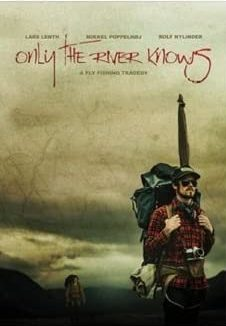

コラム
映画「Only the River Knows」
つらつらとアマゾン・プライムのアクション映画のリストをスクロールしていたら、この映画が目に付いた。ほほぉ！こんな映画があったんだ！

画像はアマゾンより引用
上映時間は、1時間23分。2012年に製作された映画のようだ。あらすじ解説には、実に面白そうなことが書いてある。
Only the River Knows はニュージーランド、オーストラリア、ノルウェー、スウェーデンで撮影されたフライフィッシングの映画です。1988年には、当時最も象徴的なフライフィッシャーの一人、Lars Lenthが、伝説の Lethe 川を探検し、その異常に大きなマスを釣りに3ヶ月間かけて過ごしました。
これは見なければ！ と思い、視聴後、不思議な思いにとらわれた。（笑）
おそらくはNZ南島の川で撮影されたと思われるフライフィッシングのシーンが素晴らしく良く捉えられており、棲んだ流れの中を、悠々と、何ものをも恐れずに泳ぐ巨大なブラウントラウトの姿が何匹も撮されている。
ロケにはかなり苦労しただろうなぁ....と思わされた。また、実際に釣り上げるシーンも迫力のあるシーンが盛りだくさんで、実に見応えがあった。
さらに、回想シーンにおける登場人物のコスチュームは、帽子、ロッド、リールなど、懐かしいアイテムが次々と登場してきて嬉しかった。おそらくは旧いバンブーロッド？ グラスファイバー？のロッドを使っているように思われたが、60cmオーバーとファイトする時には、限界まで曲げられてしまっており、ハラハラさせられた。
この映画が、ニュージーランド、オーストラリア、ノルウェー、スウェーデン各国の協力で作られたというのが興味深い。主人公である若者二人組は、英語のネイティブスピーカーではないので、字幕無しでもなんとか意味は40%くらいわかった。（笑）
NZでサイトフィッシングに挑んだことのある人ならば、誰でも笑ってしまうようなシーンがあり、
『そうだよなぁ...わかるわかる...』
と、同情した。（見てのお楽しみ！）
「リバー・ランズ・スルー・イット」のような、一大感動巨編という映画では無いが、視聴後、不思議な印象が残る、面白い映画だった。
アマゾン・プライムビデオのレンタルでしたら、30日間、200円ですので、ぜひどうぞ！
コラム 目次へ
サイトマップ
ホームへ
お問い合わせ